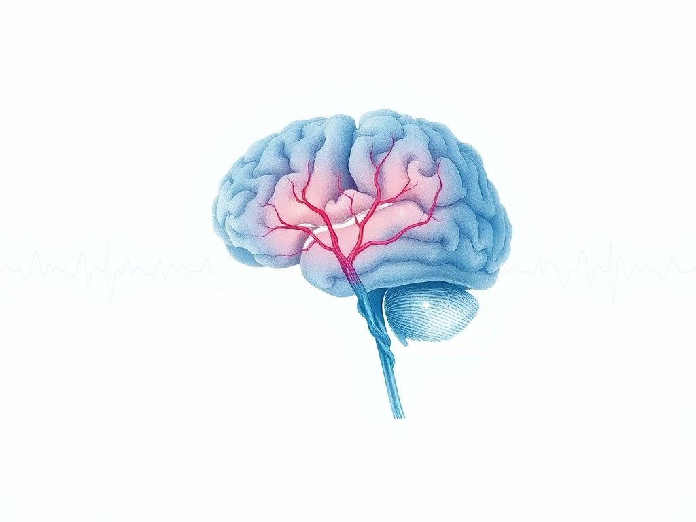

Here is what sleep researchers have known since 2003, and what almost no wellness content tells you plainly: sleep debt is real, cumulative, and the effects extend well beyond feeling tired. A team at the University of Pennsylvania, led by Hans Van Dongen, put 48 adults on either 4, 6, or 8 hours of sleep per night for 14 days. The results were stark — and instructive for how most of us actually live.
The 6-hour group — which is many high-achieving people's default — showed cognitive performance degradation equivalent to going completely without sleep for 24 hours. They didn't feel that impaired. That's the insidious part. Sleep-deprived brains are reliably poor judges of their own impairment.
The Myth of the Weekend Catch-Up
The most popular solution to sleep debt is the weekend lie-in. Sleep in Saturday, sleep in Sunday, start the week refreshed. Unfortunately the evidence doesn't support this working very well — and in some ways it actively undermines the mechanism that makes sleep restorative.
The core problem is circadian disruption. Your body runs on a 24-hour internal clock governed by the suprachiasmatic nucleus (SCN), a tiny cluster of about 20,000 neurons in the hypothalamus. This clock regulates not just sleep-wake cycles but hormone release, body temperature, immune function, metabolic rate, and cellular repair. When your sleep timing shifts significantly on weekends — what researchers call "social jetlag" — you're essentially giving yourself transatlantic jetlag twice a week, every week.
"The question isn't just how many hours you sleep. It's when you sleep, relative to your circadian phase. Timing is a separate variable — and most people are optimising only one of them."
Roenneberg et al. have documented social jetlag across hundreds of thousands of people. The average discrepancy between weekday and weekend sleep midpoints is about 1–2 hours — and even this modest mismatch is associated with increased metabolic dysfunction, greater BMI, and higher rates of depression, independent of total sleep duration.
What Sleep Is Actually Doing: The Glymphatic System
For most of the history of sleep research, we had fairly good ideas about what sleep wasn't (it wasn't passive rest, it wasn't simply brain shutdown) without a precise answer for what it was doing at the cellular level. That changed with a landmark 2013 paper in Science by Lulu Xie and colleagues at the University of Rochester.
They discovered the glymphatic system — a waste-clearance network in the brain that operates almost exclusively during sleep. Cerebrospinal fluid flows along channels around blood vessels, flushing metabolic waste products including amyloid-beta and tau proteins (the same proteins that accumulate in Alzheimer's disease). During sleep, brain cells actually shrink by about 60%, enlarging the spaces between them and allowing this clearance to operate ten times more efficiently than during waking hours.

The clinical implication is significant: the phases of sleep that get compressed first when you're short on sleep (deep non-REM, slow-wave sleep) are precisely the phases when glymphatic clearance is most active. Chronic light sleep isn't just making you tired — it's reducing your brain's ability to clear the neural debris that accumulates over each waking day.
What Korean Wellness Got Right — Long Before the Research
My halmoni didn't know what a glymphatic system was. She did know that sleep was something you prepared for, entered deliberately, and protected as non-negotiable — not something you collapsed into after the day finally defeated you.
Korean wellness tradition has a concept called saenghwal (생활) — the idea that health emerges from the rhythm and quality of daily living, not from interventions bolted onto an otherwise chaotic life. Sleep in the saenghwal framework is not recovery from the day. It's a practice embedded within the day's natural arc.
온돌 (Ondol) heating: Traditional floor heating that keeps the body warm from below, supporting the core-cooling that triggers sleep onset — a practice that prefigures what chronobiology would later establish about thermoregulation and sleep architecture.
저녁 (Jeonyeok) wind-down: A distinct evening phase with lighter food, quieter activity, and reduced social engagement — structurally identical to what sleep scientists now recommend as "sleep hygiene."
낮잠 (Najam) — strategic napping: A brief post-lunch rest of 20–30 minutes, timed to the natural circadian trough at 1–3pm. Not laziness — alignment with biphasic sleep patterns that appear to be human evolutionary default.
The Recovery Window: What Actually Works
If you've accumulated meaningful sleep debt — and most people operating on less than 7.5 hours most nights have — what actually works to recover it?
1. Prioritise sleep timing before sleep duration
Anchor your wake time first. Pick a time you can maintain on both weekdays and weekends, and protect it as though it were immovable. This stabilises your circadian rhythm, which in turn improves sleep quality for the hours you do sleep. One consistent 7-hour night usually produces better cognitive restoration than a chaotic 5 hours followed by 9 hours.
2. Light exposure is your primary circadian lever
The SCN is reset by light. Ten minutes of bright outdoor light within 30–60 minutes of waking is the most evidence-supported intervention for circadian alignment — more effective than any supplement, any app, any device. Satchin Panda's research on time-restricted eating and circadian biology has repeatedly shown that light timing alone shifts circadian phase by hours. This is free and requires no products.
3. The 90-minute unit
Sleep cycles run approximately 90 minutes. Planning your sleep in 90-minute increments — 6, 7.5, or 9 hours rather than 7 or 8 — tends to produce better morning alertness because you're more likely to wake during lighter sleep phases rather than deep sleep. This is not as well-supported as the timing interventions above, but it's a practical heuristic worth experimenting with.
4. Temperature as a sleep trigger
Core body temperature needs to drop approximately 1–3°F to initiate sleep. You can actively support this by keeping the bedroom cool (65–68°F / 18–20°C), taking a warm bath 60–90 minutes before bed (which paradoxically accelerates cooling), or using breathable natural-fibre bedding. This is the mechanism behind the ondol tradition — and it's solidly mechanistic, not speculative.
"Every study I've read on sleep converges on the same practical truth: consistency beats heroics. One perfect sleep week can't undo three months of 5-hour nights. The reverse is also true."
The Honest Caveat
I want to be precise about what I'm certain of and what I'm not. The circadian biology and glymphatic research is well-replicated and the mechanistic picture is solid. The specific effects of social jetlag, light exposure interventions, and sleep staging research — also strong. Some of the quantitative claims you'll see in wellness content (exact percentages, specific thresholds) are often extrapolated beyond what the primary studies actually show, and I've tried to flag those where relevant.
What I'm most confident in: timing consistency matters as much as duration, the glymphatic system is real and sleep-dependent, and most people's sleep debt is larger than they perceive. If you want to dig into the primary literature, the citations here will take you directly to the source papers — not to secondary summaries that may have introduced distortions.